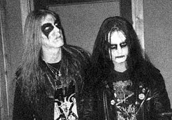

Bem vindo ao site de noticias #1 de Black Metal!
Hoje: 10/08/1993
Na noite de 10 de agosto de 1993, Varg Vikernes e Snorre Ruch (Blackthorn) viajaram de Bergen até o apartamento de Euronymous em Tøyengata, Oslo.[16] O encontro resultou em uma discussão e, após um confronto, Varg esfaqueou-o até à morte. O corpo foi encontrado numa escada fora do apartamento com 23 lesões de facadas - duas na cabeça, cinco no pescoço e 16 nas costas.[35] Inicialmente, a mídia culpou a cena do black metal sueco pelo assassinato de Euronymous.[28]
Foi especulado que o assassinato fosse resultado de uma disputa contratual/financeira sobre as gravações do Burzum, ou um tentativa de suplantar o esfaqueamento em Lillehammer.[36] Vikernes negou todas as acusações, alegando ter atacado Euronymous apenas para se defender. Ele disse que Euronymous havia planejado atordoá-lo com uma arma de choque, amarrá-lo e torturá-lo até à morte enquanto gravaria o ocorrido em vídeo. Vikernes explica: "Se ele estivesse falando sobre isso para todo mundo eu não levaria a sério. Mas ele teria dito para apenas um grupo seleto de amigos, e um deste contou a mim".[5] Ele disse que Euronymous planejava usar um encontro sobre assuntos da gravadora para emboscá-lo.[5][37] Blackthorn ficou do lado de fora fumando, enquanto Vikernes subiu as escadas até o apartamento de Euronymous no quarto andar.[37] Vikernes disse que encontrou Euronymous na porta e entregou o contrato em mãos, mas quando ele avançou e confrontou Euronymous, este "entrou em pânico" e chutou-o no peito.[37] Os dois iniciaram uma briga que resultou no esfaqueamento fatal de Euronymous por Vikernes.
Fim

Fotografia de Per Yngve Ohlin (“Dead”) e de Øystein Aarseth (“Euronymous”) da banda Mayhem.